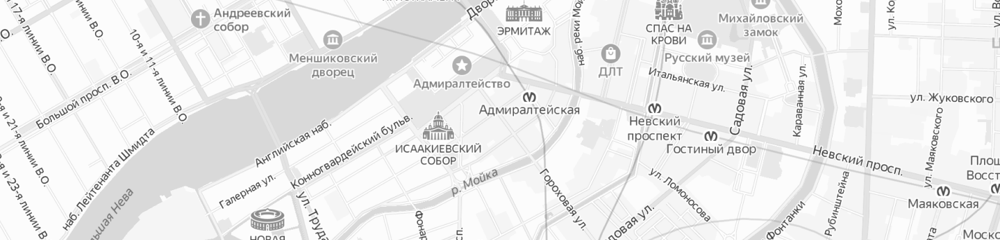

ТЕХНИЧЕСКОЕ ОБСЛУЖИВАНИЕ АВТО
СТО на карте
На карте
Производим ремонт любых китайских автомобилей быстро, качественно
доступно 26 автосервисов
Прайс-лист на услуги
Название услуги
Цена
Проверка шаровых соединений
1 407 ₽
Проверка сайлентблоков
890 ₽
Проверкаизноса и работоспособности тормозной системы
1 407 ₽
Проверка опор двигателя и коробки передач
890 ₽
Проверка шаровых соединений
1 407 ₽
Проверкаизноса и работоспособности тормозной системы
890 ₽

Своевременный ремонт рулевого управления автомобиля - залог безопасного вождения.
Устранение неисправностей в деталях и механизмах рулевого управления – это процедура, которая на практике гораздо проще (а во многом и дешевле) ремонта той же самой коробки передач или, к примеру, двигателя. Однако значимость подобных процедур невозможно переоценить.
Даже новички знают, что от надежности рулевого управления зависит устойчивость автомобиля на дороге и его маневренность. Но самое главное, что от состояния рулевых реек, наконечников, усилителей, а также прочих узлов и деталей системы зависит безопасность водителя и его пассажиров. Исправные механизмы рулевого ежедневно спасают жизни десятков людей, а изношенные и вышедшие из строя детали, наоборот, становятся причиной гибели даже очень дисциплинированных водителей.
Даже новички знают, что от надежности рулевого управления зависит устойчивость автомобиля на дороге и его маневренность. Но самое главное, что от состояния рулевых реек, наконечников, усилителей, а также прочих узлов и деталей системы зависит безопасность водителя и его пассажиров. Исправные механизмы рулевого ежедневно спасают жизни десятков людей, а изношенные и вышедшие из строя детали, наоборот, становятся причиной гибели даже очень дисциплинированных водителей.
В рамках данной услуги мы выполняем следующие работы:
- Проверка шаровых соединений
- проверка сайлентблоков
- проверка износа и работоспособности тормозной системы
- проверка опор двигателя и коробки передач
- визуальный осмотр на наличие течи или запотевания технических жидкостей
- повреждения или износ резины
- осмотр рулевого управления
- проверка состояния рычагов
- визуальный осмотр амортизаторов и пружин
- проверка состояния ступичных подшипников
- проверка состояния ШРУС'а
Ближайшие
сервисы
сервисы
